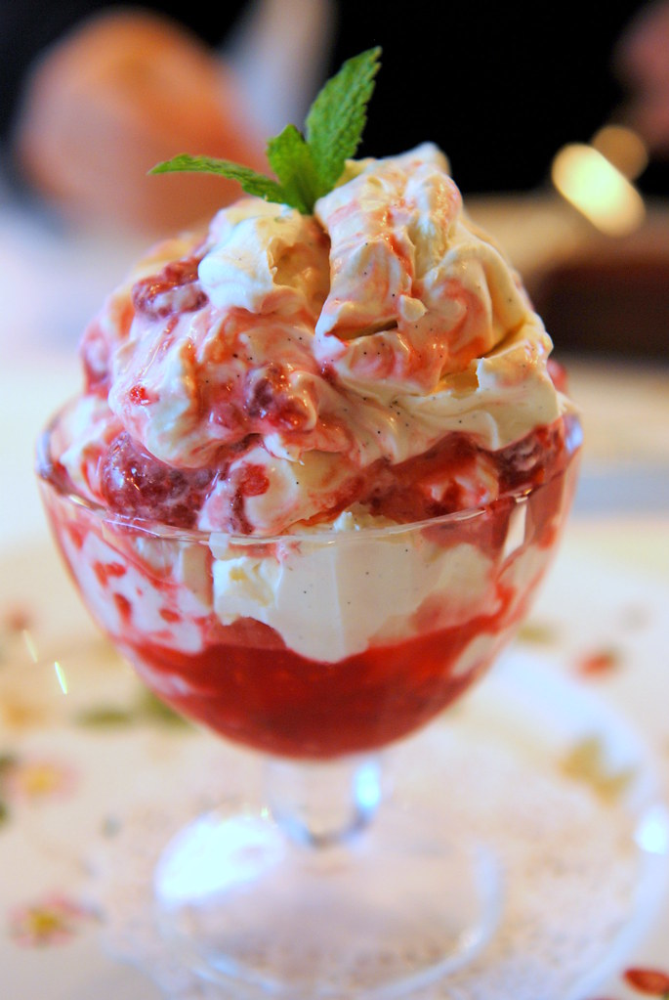

Main
Eton Mess

Info:
- Serves: 6-8 people
- Preparation time: 20 mins
- Difficulty: Easy
Ingredients
- 400g strawberries (hulled and finely sliced)
- 50g caster sugar
- 1/2 lemon (juiced)
- 500g fresh vanilla custard
- 200ml double cream
- 50g shop-bought meringues (roughly crushed)
- ice cream cones (optional - for serving)
Preparation
- Tip the strawberries, sugar and lemon juice into a bowl and toss well. Cover and
leave to macerate.
- Whisk the custard and cream together in a shallow freezerproof container with a
lid until combined. Freeze for 1 hr 30 mins-2 hrs until semi-frozen. If you have a
large freezer and a blender, place the jug of the blender in the freezer alongside
the ice cream to get cold (this is not essential).
- Scrape the semi-frozen custard into the blender and pulse until it’s the texture of
a thick smoothie. Pour back into the container and freeze for another 1-2 hrs until
it is the texture of soft-serve ice cream. If you don’t have a blender, use a whisk
to break up the custard.
- When the custard is ready, spoon the macerated strawberries over the top, leaving most
of the syrup in the bowl. Stir the strawberries and a few of the meringue pieces through
the custard, then scatter most of the remaining meringues over the top.
- Freeze for at 3 hrs until the ice cream is scoopable, or overnight. Can be made up to
three days ahead and frozen. Leave to soften slightly before serving. Scoop the ice cream
into bowls or cones and serve topped with the remaining meringue and strawberry syrup.